TensorFlow中的反向传播
反向传播算法对于快速训练大型神经网络来说至关重要。本文将介绍该算法的工作原理。来源于谷歌对神经网络的一个简单展示。原文地址：反向传播算法
简单的神经网络
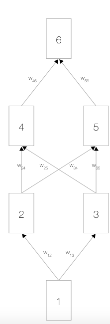
在上边，您会看到一个神经网络，其中包含一个输入节点、一个输出节点，以及两个隐藏层（分别有两个节点）。
相邻的层中的节点通过权重 相关联，这些权重是网络参数。
激活函数
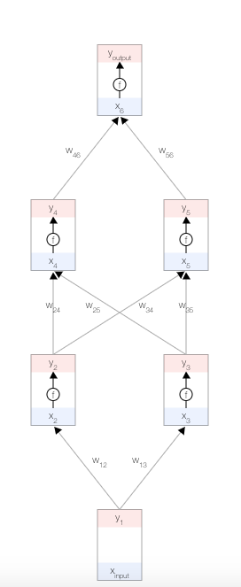
每个节点都有一个总输入 𝑥、一个激活函数 𝑓(𝑥) 以及一个输出 𝑦=𝑓(𝑥)。 𝑓(𝑥) 必须是非线性函数，否则神经网络就只能学习线性模型。
常用的激活函数是 S 型函数：
误差函数
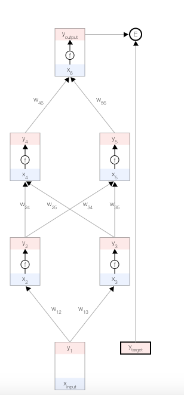
目标是根据数据自动学习网络的权重，以便让所有输入 的预测输出 接近目标 。
为了衡量与该目标的差距，我们使用了一个误差函数 𝐸。 常用的误差函数是
正向传播
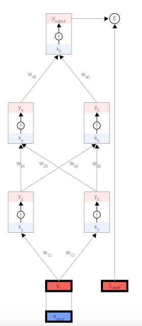
首先，我们取一个输入样本 ，并更新网络的输入层。
为了保持一致性，我们将输入视为与其他任何节点相同，但不具有激活函数，以便让其输出与输入相等，即。
更新隐藏层
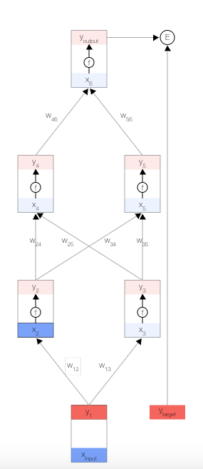
现在，我们更新第一个隐藏层。我们取上一层节点的输出 ，并使用权重来计算下一层节点的输入 。
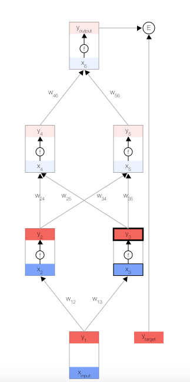
然后，我们更新第一个隐藏层中节点的输出。
为此，我们使用激活函数 。
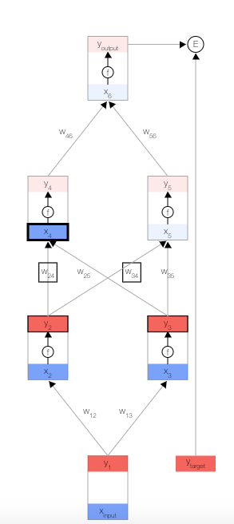
使用这两个公式，我们可以传播到网络的其余内容，并获得网络的最终输出。
误差导数
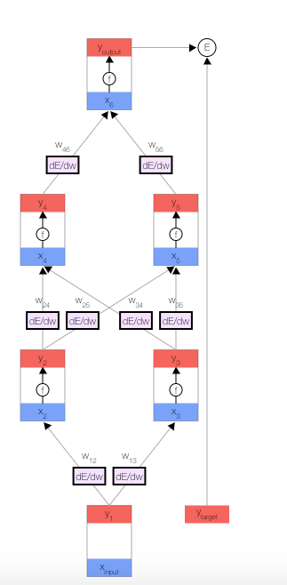
反向传播算法会对特定样本的预测输出和理想输出进行比较，然后确定网络的每个权重的更新幅度。
为此，我们需要计算误差相对于每个权重 的变化情况。
获得误差导数后，我们可以使用一种简单的更新法则来更新权重：
其中，𝛼 是一个正常量，称为“学习速率”，我们需要根据经验对该常量进行微调。
[注意] 该更新法则非常简单：如果在权重提高后误差降低了，则提高权重；否则，如果在权重提高后误差也提高了 ，则降低权重。
其他导数
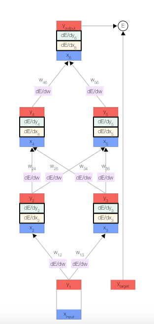
为了帮助计算 ，我们还为每个节点分别存储了另外两个导数，即误差随以下两项的变化情况：
节点 的总输入，以及 的输出
反向传播
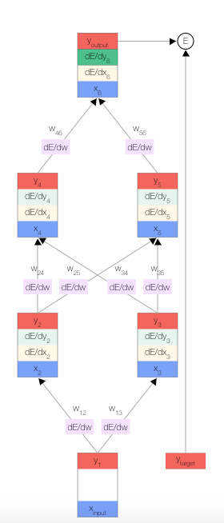
我们开始反向传播误差导数。
由于我们拥有此特定输入样本的预测输出，因此我们可以计算误差随该输出的变化情况。
我们可以得出：
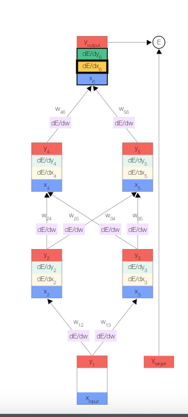
现在我们获得了，接下来便可以根据链式法则得出 。
其中，当 是 S 型激活函数时，
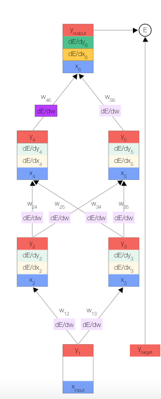
一旦得出相对于某节点的总输入的误差导数，我们便可以得出相对于进入该节点的权重的误差导数。

根据链式法则，我们还可以根据上一层得出 。此时，我们形成了一个完整的循环。
接下来，只需重复前面的 3 个公式，直到计算出所有误差导数即可。
BPTT
BPTT 是 Backpropagation through time 的缩写。在 RNN 中这是对传统 反向传播BP的一个扩展。 因为在 RNN 中，我们无法直接应用 反向传播算法，因为在计算图中 RNN 网络是循环的。所以我们就会将 RNN 进行展开。

这样，RNN 就可以看作是一个前馈网络，我们就可以使用 BP 了。
但是，因为有 梯度消失/梯度爆炸的情况，想要将梯度传播到多个层后非常的困难。此外，展开RNN并为一个非常长的序列传播梯度的计算要求非常大。
所以才出现了 BPTT，他背后的基本思想是：每次处理一个时间步长的序列，每处理 K1 步长，然后运行 BTPP K2 个步长。
反向传播的截短
通过设计，递归神经网络（RNN）的输出取决于任意远距离的输入。不幸的是，这使得反向传播计算变得困难。为了使学习过程易于处理，通常的做法是创建网络的“展开”版本，其中包含固定数量（num_steps）的LSTM输入和输出。然后在RNN的这种有限近似上训练该模型。这可以通过一次馈送长度输入num_steps并在每个这样的输入块之后执行反向传递来实现。
这是一个简化的代码块，用于创建执行截断反向传播的图形：
# Placeholder for the inputs in a given iteration. |
在所有数据集上实现迭代：
# A numpy array holding the state of LSTM after each batch of words. |
原文作者: Gowa2017 Zhang
原文链接: https://gowa2017.github.io/TensorFlow/TensorFlow中的反向传播.html
版权声明: 转载请注明出处(必须保留作者署名及链接)